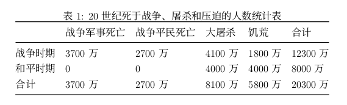

草稿之一 —— 生命
以下只是粗陋的第一版草稿，可直接移步 https://github.com/sd44/dingjia 下载成书 PDF。
草稿之一 —— 生命
生命权是最基本, 最重要的人权, 如果无法充分保障人的生命权, 那么一切其它权利都是空中楼阁。无端剥夺人的生命, 或者肆意对人施加恐吓、虐待和折磨, 就是用一种非人权的待人方式。任由这种情况发生, 个人权利就无从谈起。所以一般各国的刑法都将侵害他人生命权的罪行量刑最重。“生命权是一个人之所以被当作人类伙伴所必须 [1] 享有的权利。”
关于无国界医生的一场争议
无国界医生是一个独立的国际医疗人道救援组织, 致力为受武装冲突、疫病和天灾影响, 以及遭排拒于医疗体系以外的人群提供紧急医疗援助。无国界医生只会基于人们的需要提供援助, 不受种族、宗教、性别或政治因素左右。
不完整的中国内地无国界医生 (MSF) 成员名单 (包括医生与后勤人员, 按姓名拼音排序, 排名不分先后) 阿依夏・那万、安娜、柴溪、蒋励、潘渊、屠铮、王娅王俊 (夫妇二人)、魏钊华、赵一凡、张定宇、曾思斌、周吉芳、邹纬等等。实际人数应为 30 人以上。笔者向这些致力于在最恶劣环境下拯救生命的仁人志士致以我个人最大的敬意!(Warning: 跟 MSF 联系下, 看能不能要到名单)
MSF (无国界医生) 首位中国内地成员是潘渊, 他于 1998 年就加入了 MSF, 才开始时做中国境内志愿工作, 于 2001 年 2 月作为 MSF 首位来自中国内地的海外志愿者 [2] 赶赴苏丹。(Warning: 肯定是中国内地首位 MSF 海外志愿者, 但仍需确认是不是首位 MSF 内地成员)
2006 年, 潘渊鼓动他的表姐 —— 当时正在北京大学人民医院医学部任职妇科主治医师的屠铮加入 MSF。2007 年 3 月, 屠铮作为 MSF 医生赶赴利比亚执行为期半年的救 [3] 援任务。成为中国内地首位参与无国界海外救援项目的医生。(Warning: 据说至今为止, 屠铮参加过 5 次海外项目了, 需确认)
在互联网舆情方面, 关于 MSF 的讨论话题很少, 单个话题的讨论人数基本都在 10 人以下, 只有知乎网的关于蒋励的一张帖子热度较高, 文字回复条数过千。题目是,《如 [4] 何看待北京医生辞职去阿富汗参加无国界医生?》。蒋励在北京大学医学部完成八年本硕博连读教育后, 顺利入职北京大学人民医院。受师姐和领导屠铮影响,“2012 年参加了无国界医生。2013 年 3 月至 6 月在无国界医生位于阿富汗霍斯特的妇产医院工作, 2014 年 1 月再次去往无国界医生在巴基斯坦蒂 [5] 默加拉的医院工作。” 阿富汗霍斯特医院情况总结如下, 床位 60 张, 每月 1200 多例分娩, 相关医护人员有 2 位妇产科医生, 4 位国际助产士, 2 位麻醉医生组成, 也就是说, 这 8 个人彼此协作, 24 小时不间断的进行平均 40 余例的分娩 “流水线作业”，挽救了极多数量的新生儿和妊娠母亲的生命。
但有关这个帖子的一些回复真是让人完全意想不到, 瞠目结舌。其中点赞 1700 多次、点赞次数排行第四的匿名帖子反对无国界医生对阿富汗的援助, 提倡绝育论, “已经生育三个及其以上孩子的妇女向援助医院请求接生必须以切除子宫或者上节育环作为交换条件, 然后由国际组织建立隔离带, 优先为已经绝育的妇女及其子女提供庇护, 食物, 医疗和基础教育, 把儿童从中剥离出来接受现代教育。” ,有帖子发表类似观点 “没有条件接受教育的人就没有出生和生存的权利。” ,除此之外, 还有 “愚善” , “学医救不了阿富汗” 等脑沟回清奇的言论。
在网络上, 不止此贴所涉及国家, 我们还可以看到, 关于罗姆人 (吉普赛人)、社会底层人士的优生学绝育论。这种绝育论宣扬, 就缺乏教育和社会资源的群体, 或者拥有更高不和谐的群体 —— 这种水平判定其实只是个人不负责的主观判断, 应当尽量抑制他们彼此间繁殖新生生命, 对于正在或已经出生的新生生命,“社会上流人士” 有义务、有必要剥夺新生儿父母的监护权、教育权, 让社会特殊的学校或机构行使监护权、教育权, 使他们脱离这个不文明的群体……
“科学” 的优生学绝育论
优生学常是举着科学的旗号, 被一些别有用心或者精神变态之人利用, 行反伦理、反人类之实, 让我们看看优生学在历史上曾被误用滥用的历史吧, 以下内容节选自邱仁宗所著《一本医学家、遗传学家、决策者和立法者必读的书 ——《从 “安乐死” 到最终 [6] 解决》》:
1881 年 Francis Galton 提出 “优生学”, 当时被定义为 “通过优化生育改良人种的科学”。于是在北美和欧洲兴起了一场将弱智、残疾、在竞争中处于劣势的人绝育、禁止他们第一章探讨种族灭绝的意识形态背景, 即固守 “人类不平等” 入境的优生运动。1907 年美国印第安那州颁布了第一部将精神病人、性罪错者、智力低下者、道德堕落者和癫痫病人绝育的法律, 到了 30 年代中期已有半数以上的州通过了类似的法律。
对日耳曼人或德意志人的优良品质深信不疑的德国医生和科学家提出了 “种族卫生”(Rassenshy giene) 概念。1920 年德国律师 Carl Binding 和医生 Alfred Hoche 出版了第一本题为《授权毁灭不值得生存的生命》的书。是纳粹政权使种族卫生计划成为现实, 它决心保持德意志血统的纯洁性, 清理德意志的基因库, 将 “人类不平等” 这一思想制度化。1933 年 7 月颁布《防止具有遗传性疾病后代法》, 即绝育法, 对患有各类精神和肉体疾病的病人实行强制绝育。1933 年 11 月颁布反危险惯犯法》和《安全和改革措施法》, 授权将反社会者关进国营医院, 对性犯罪实行阉割手术。1935 年 9 月颁布《帝国公民法》和《德意志血统和尊严保护法》, 二者统称纽伦堡种族法, 正式在法律上排斥犹太人、吉卜赛人、黑人。
1939 年 10 月, 希特勒签署了一份文件, 文件称:“一些根据人道的判断被确认为不可治愈的病人在确诊后准许被实施慈悲死亡。”
后来将残疾人安乐死的计划进一步在德国占领区扩大实施。接着大规模屠杀吉卜赛人和犹太人, 进行所谓 “最终解决”, 被杀害的人数达 600 万人。
在数年前, 这种极端蔑视生命权的言论在中国没有一丁点市场, 几乎见不到有人去支持或宣扬。如今我们不需要在网络上, 就算是在现实中的社交场合, 都可能会听到这些优生学绝育论或灭绝论。你若反驳他们, 这些少数派反倒会讽刺你为 “圣母”。宗教、种族、底层, 我们为什么回到了, 甚至超越了纳粹曾经的邪恶呢? 我们忘了我们历史上被称为 “东亚病夫”“黄皮猪” 的种族言论了吗?
被漠然视之的生命权
一些老司机告诉我们 “把人撞成重伤, 不如直接撞死人” 的言论, 并有撞到陌生人后多次碾压致受害者死亡的多个现实案例; 某地的同胞们学习电影《盲井》,组团外出靠矿井下杀人获利并组成犯罪链条; 部份军事爱好者们狂想爆发战争, 中国重锤他国或地区, 这是他们的民族自信啊; 我们还可以看到一些所谓的左派们希望重回激进, 工运、革命, 一些所谓的右派们想着引进西方的 “民主” 和 “自由”,这些人即使在他们标榜的方面都常是狗屁不通, 但都有个共同点就是不惜爆发战争, 全国大乱, 生灵涂炭, 在他们看来, 大量生命死亡这种残酷性是 “实现伟大梦想” 所必不可少、不可或缺、不能避免的。
宣扬这些反生命文化的不是未受教化、恶贯满盈之人, 而更多是接受 (过) 高等教育的普通人群, 有些人甚至是博士。笔者认为, 这反映出我国在关于生命权, 关于正义和权利的社会科学教育方面, 是严重失位的, 存在着可怕的匮乏与空洞。社会上下主抓经济建设的快速发展, 而将社会人文教育远远抛在了后面, 有时这种反差甚至是故意为之的。这些极端反生命权的言论因此得以抬头 (这方面的详细论述放在其他章节, 暂不展开),这真是对 “中华上下五千年传统文明” 的莫大讽刺。长此以往, 即使经济保持快速发展, 即使我们自然科学知识获得了世界领先, 我们仍将成为人类社会文明的荒漠, 荒漠中将只有个别人聊以自慰的小绿洲, 而这小绿洲于国于家并无多大用处, 只可自慰而已。这最终仍会反过来导致经济、科学的大幅倒退。(Warning: 这里是不是行文太自由了?)
20 世纪的战争
我们迅速的将中国 20 世纪所经受的各种生命惨剧忘却脑后, 而中国是 20 世纪受战争和暴行影响受害最大，死亡人数最多的国家。其实离我们最近的一场战争 ——1979 年中越战争, 从爆发之日算起距今还不到 40 年。马修・怀特 (Matthew White)[7] 致力于研究和统计战争及暴行导致的人类死亡人数, 他采用科学做法参考多种资料, 立场比较中立, 数据统计相对详实可信。虽然如此, 因西方世界中战争及暴行相关参考资料大多带有反苏反共反中意识形态影响, 这无疑也会使马修所使用的选材出现偏差, 仍建议大家批判性地接受。我们就用马修・怀特的数据来结束 “生命” 这一节吧。

另外，依据马修其他页面，统计如下，第一次世界大战（1914-1918），全球死亡人数约 1500 万。第二次世界大战（1939-1945），全球死亡人数约 6600 万。20 世纪全球全部死亡人数大约为 55 亿，其中死于 20 世纪战争、人类暴行的人数约 2.03 亿，也就是说，在 20 世纪，全球死亡人口中平均每 27 人中就有 1 人死因是战争或人类暴行。
中国方面，军阀战争（1917-1928）期间各方军队战死约 20 万，因屠杀和饥荒死去的民众约 60 万，共计死亡约 80 万。第一次国共内战（1928-1937）期间，死于战争、屠杀和饥荒的军民约 500 万。抗日战争（1937-1945）期间，国共两党军事死亡人数约 180 万，平民死亡人数约 800 万，伪军死亡人数约 20 万左右，合计死亡约 1000 万人。第二次国共内战（1945-1949）期间军民死亡人数约 250 万。
“人相食” 的中国史
在中国史书记载上，“人相食” 屡次出现，已经成为一种固有表述。据不完全统计，《资治通鉴》中大约平均 30 多年出现一次人相食，《二十四史》中因记录详细，跨越朝代久远，大约 20 多年出现一次人相食。
在《中国古代的食人》一书中，郑麒来（美籍韩裔）将食人分为两类，“求生性食人意味着人们为自己的生物性生存而互食，与求生性食人密切联系的食物匮乏往往由战争、内乱等人祸或干旱、饥馑、虫灾等天灾引起。习得性食人…… 更多受制于文化因素，诸如爱与恨。”。“在研究中国历史文献的过程中，我们发现 153 例与战争（直接）有关的食人事例，均由战时或战后的饥饿和饥荒引起。…… 间接相关的有 74 例，两个数字加起来，即全部与战争有关的食人事例便共有 227 例”。（个别案例有重复，还有个别案例因不具统计意义也没有计入统计。），几乎每朝每代均发生这种求生性的群体人相食。
综观人类历史，就民计民生方面来说，人类很可能不是总体向上进步偶有曲折，而是因欲望带来的生发死灭和与之相伴的悲喜交加的上下循环。且在这欲的循环中，向上的、喜剧的经历苦短而观众甚少，常常是你方唱罢他登场；向下的、悲剧的经历恨长而观众众多，常常是意悬悬半世心。笔者认为，尤其对于中国人来说，我们对于生命的认知和尊重在总体上很可能是处于较低水平。幸好前人与我们现在的人何干，而我们本身也善于遗忘。幸哉乐哉！
朋友们，我们下次战争再见吧。
附录 A 参考文献
[1] 人权 [EB/OL]. https://zh.wikipedia.org/wiki/% E4% BA% BA% E6%9D%83.
[2] 南都周刊. 无国界医生组织首位内地成员的 8 年救援生涯 [EB/OL]. (2006–10–28). http://news.sina.com.cn/c/2006-10-28/160311358033.shtml.
[3] 罗雪挥, 李楠. 屠铮在利比里亚当 “无国界医生”[N]. 人民日报海外版, 2008–12–31 (07).
[4] 如何看待北京医生辞职去阿富汗参加无国界医生?[EB/OL]. https://www.zhihu.com/question/53835987.
[5] 丽水市教育局. 《朗读者》首期特邀嘉宾蒋励 [EB/OL]. http://www.sohu.com/a/127492681_387142.
[6] 邱仁宗. 一本医学家、遗传学家、决策者和立法者必读的书 —— 读《从 “安乐死” 到最终解决》[J]. 医学与哲学, 2002, 23 (5): 61–63.
[7] WHITE M. Necrometrics: Death Tolls across history[EB/OL]. http://necrometrics.com/all20c.htm.